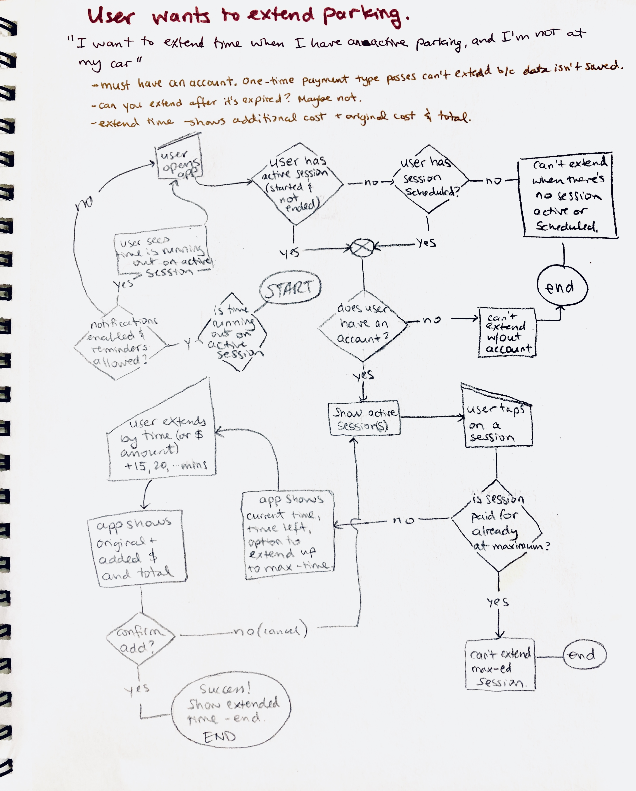

Copilot
It is surprising that in this day and age, there isn’t a widespread app for bridging the gap between driving to nearest to your destination, parking, and actually arriving to your destination.
Problem
You know when you’re in a rush and need to park? You circle around, stressing out to find a (hopefully) cheap spot. Finding a place for $1/hr cheaper makes your day. When you do park, you don’t always know if it's free or not, where the parking meter is, or how much it will cost. Sometimes, you will not remember exactly where you parked, or when your ticket expires.
Solution
Copilot is an app that knows the street parking availability and can direct you to spots nearest to your destination that are most likely open. It reduces the stress of finding and paying for a spot by having the information and payment functionality at your fingertips, whether you are familiar with a city or not.
This was my final project at my Bloc apprenticeship, under the mentorship of Chris Gillis.
Research + Analysis
User Survey
Who are my users, and what’s their take?
To get a better idea about my target audience, I put out a survey on freeonlinesurveys.com (which isn’t actually free if you want some sweet features). I started out asking general questions such as “Do you drive a vehicle?”, and “How many times a week do you park a vehicle?” These questions helped me not only to guide testers to appropriate follow-up questions, but also to segment them into groups explaining their opinions and behaviors.
It turns out that the way people answered questions about most useful features of a parking app and frustrations while parking were highly correlated with frequency and whether or not they typically paid for parking.
Most frustrating thing about parking a vehicle
Frequent Pay Parkers
Frequent Free Parkers
Infrequent Parkers
Top two features rated "That's Awesome" by over 90% of respondents
- Tells me how many spots there are in an area.
- Shows me where there are spots in an area.
These features correlate as the solution to the highest rated frustration with parking which is “driving around to find a spot”.
Competitors
Selected Weaknesses and Threats
The goal is to capitalize (make my app do better) on as many of these as possible as long as they are relevant to my top user stories.
Parking Kitty
- No Geolocation
- Can't use the app unless you have an account
- Creating a parking session takes too much time (many screens)
Parker
- Can’t pay for parking on the app.
- Shows street-park availability but is very slow, shows too much when zoomed out, and restricted to few locations
- Drains phone battery fast
Best Parking
- Recent update has produced many unhappy users
- Does not show parking history
- Does not integrate with parking maids
Personas
summarizing goals and frustrations
In line with research, I created three personas to embody the three profiles that emerged. The personas are based on a combination of the users who took my survey.
Frequent Pay Parker
Goals
For work, park somewhere that is no more than a 10 min. walk from his office. He doesn’t care if it’s garage or street.
He wants to park as quickly as possible, and have the longest parking availability as possible.
Frustrations
It takes too long to park, he’s already spent so much time driving to work that the parking ordeal doesn’t help.
Not knowing the the number spots open of a given street/area.
Moving the car when allowed time has run out.
Frequent Free Parker
Goals
She wants to know where to park before she goes, often to unfamiliar places between flights.
She’s familiar with Stillwater, but would like to know where there are spots during events or if there are any closures from construction.
Frustrations
Different cities have different apps, requiring a lot of info input every time. Could be made simpler!
Wishes app would just know how much it costs without having to put in some code or address.
When she does have to find parking, even when free, she doesn’t know where to find it in other cities.
Infrequent Parker
Goals
To avoid getting a ticket by knowing for sure I can park.
Find a free spot fast (or cheap spot!)
Save money by ending a session early.
Frustrations
Circling around trying to find parking. Where are those spots!?
Interpreting confusing parking rules.
She has to keep running back to her car to put more coins in the meter.
Sometimes she forgets where she parked her car, which is stressful, especially when she thinks time is running out.
Interaction Design
User Stories
Prioritizing provides the foundation
Fortunately, the top needs overlapped across all user profiles: The need to extend a parking session & the ability to see where and how full street parking is.
Past the first couple stories, the importance of the subsequent ones varied pretty wildly even within user profiles.
I loaded all of them into FeatureMap to keep things organized.
Flows
Creating the happy path
Now that I had the user stories all written out, it was time to take the most important ones and draw how someone might roll through the interface to achieve their goal set in the story.
Extend Parking
Branding
Logo
Marriage of Look and Feel
The name “copilot” transpired out of the idea that the user should feel like there’s a real human copilot sitting there helping them find a spot, pay for it, and extend if necessary.
It took a fair bit of sketching different shapes before I settled on the aviator glasses, hinting the pilot-idea.
Typography
Choosing one of a type
I decided on a single typeface because Copilot is not a very text-heavy app, and I wanted to reduce time-to-load. I did try a couple of combinations, but I always came back to Titillium Web as the one typeface that worked the best.
The font-face has a sans-serif softness but rigid end caps and geometrically even strokes that exude regularity. The combination goes well with the trust, happy, and functional vibe I’m trying to convey with the color palette.
Colors
Trust + Optimism
There’s a very big element of trust with apps like this. It has payment and car information to start, but also has to deliver timely information and make sure the user doesn’t get a ticket. Users of competitors have very little patience with failures associated with parking apps, so I wanted to really drive home the idea of trust, calm and idealistic/happy with the colors blue and yellow.
I also include neutrals that go well with both of these colors and a functional color palette for errors or success messages. The app rides the line of over-communicating with the user in cases when a parking session starts, is extended, is running out, and so on. As was evident in my first round of testing, the lack of communication is a surefire way to alienate and cause doubt.
Prototyping
Iterate
Design, Test, Repeat
The cycle started as soon as I drew the first wireframe sketch. I iterated on design versions working to reducing user confusion and narrowing the scope towards a minimum viable product. This meant that only the most important user flows made it into the final design. Not surprisingly, none of the flows stayed exactly the same as I had originally imagined them.
Parking Sessions home screen
The title went from Tickets to Parking Sessions. Testers didn’t like “Tickets” because it sounded like “a parking ticket” which is exactly what they want to avoid.
I changed the top button to be full width for better discoverability.
When I applied colors at first, the readability wasn’t good. The final design evolved to a blue-hue look. I used a Preference Test to see what people preferred.
Users said they were not clear about the coloration - they said blue is generally used on active buttons, and thought greys were unavailable options.
Added more white space and margins around the “show more link”.
User testing revealed that the information on the card needed to include how much longer a parking session could be extended, to avoid going down the path of clicking “extend” only to find out that the spot is not extendable for as long as they need it for.
Conclusion
Reflection
How did it go?
Given users’ reactions and the research that went into it, Copilot could be a viable app given the data exists in the backend. In fact, BMW + INRIX is doing exciting work that shows a similar interface they are already working on using ultrasonic sensors to supply parking availability information among other sources.
Testers' comments
- "It's a cool app! I kinda want it now."
- “I like that it’s clean and simple, there are only four buttons at the bottom.”
- “A lot less data entry than other apps I’ve had to use”
Lessons Learned
- To keep wording and navigation behavior as user expected proved to be very difficult, even with content strategy written in the research phase of the project.
- Testing should always be done on the medium that the app is indended for. i.e. if the app is meant to be for touch screen, don't test on a desktop with mouse-input. I did this with my first test-taker, but realized their frustration stemmed from using the wrong device for the test.
- When testing the high-fidelity prototype, giving testers a “tutorial” of the testing interface would have improved testing quality. There was a lot of confusion resulting in the lack of trust around the fact that the prototype doesn’t work fully like an app even though it looks like a finished product. Reminding them during the test wasn’t enough.
- People who don’t usually pay for parking will go to great lengths to find free parking in a city. They are willing to walk distances if they can find a free spot. Free parking should be easier to find visually, perhaps via a map filter to show only free spots.
- It is hard to be unbiased. While waiting for survey responses, I thought I’d make three personas differentiated by how often they parked. Seems logical, right? However, in order to split the survey takers into more even groups, I had to come up with a slightly different scheme.
What's Next
Thinking forward
Prototype vs. Code (Stuff I'd pass on to front end devs)
- The drawer should expand when swiped up, not tapped
- Map should be scrollable independently of the drawer, except in very specific situations (e.g. on the summary screen about to start a parking session)
- Allow pinch/zoom gesture on map
- Open on the parking sessions page when a session is actively running, but all other times, open on map.
Sample of backlog items
-
The depiction of parking volume needs visual improvements. Every tester said that they thought it was traffic instead of parking volume. Some of the ideas we discussed:
-- Make the color scheme slightly different than google maps traffic
-- Show colors on both sides of the street
-- The coloration could be well-styled dashed lines - Add Parking Garage parking availability